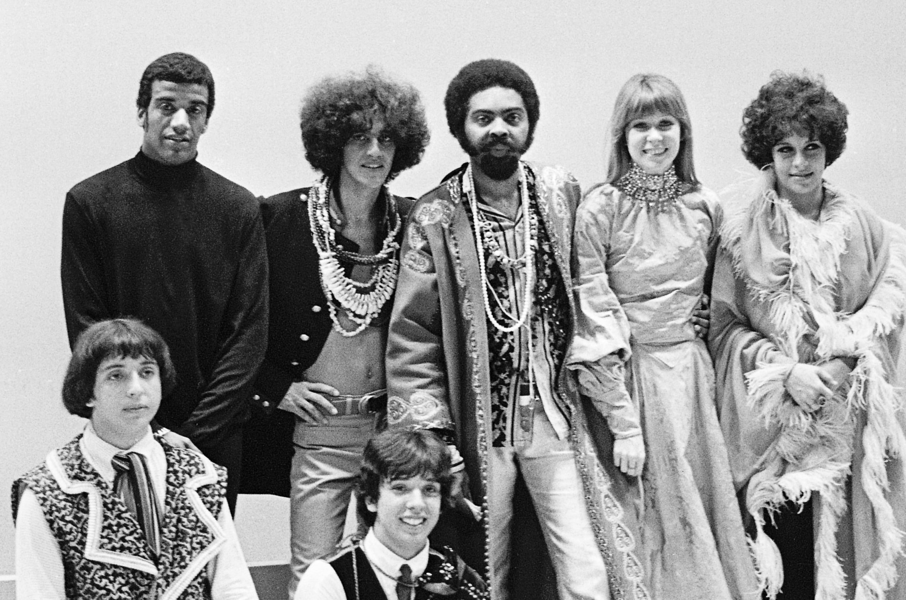
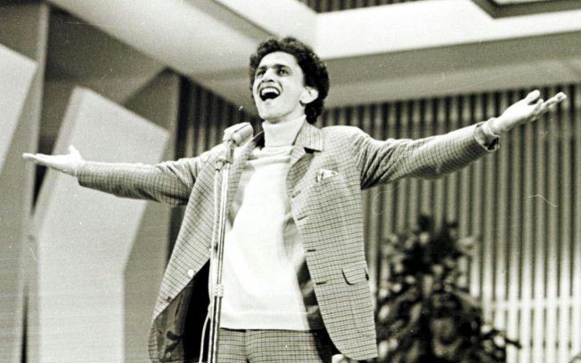
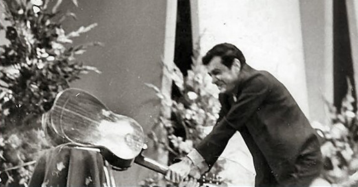
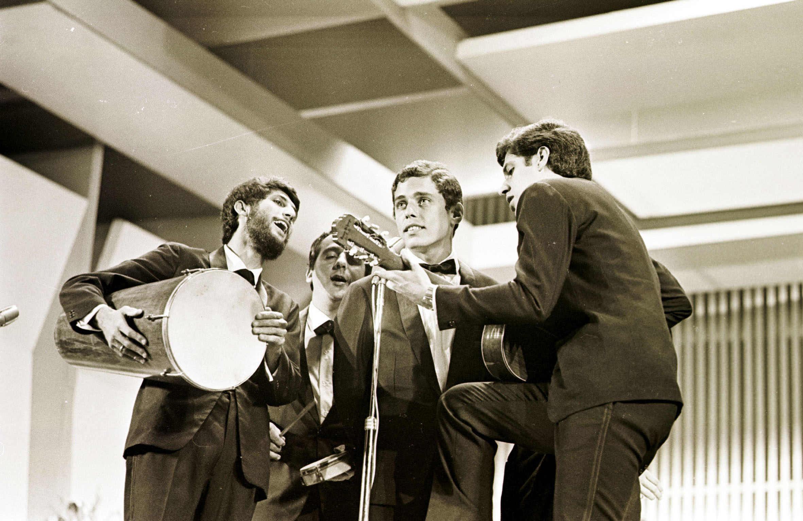

Este site tem o objetivo de reunir as principais obras da Música Popular Brasileira durante o final da década de 60 e o início da década de 70. Inclui ritmos variados, desde o samba ao rock!
 Artistas tropicalistasTropicália é um movimento artístico que nasceu nesta época e algumas das músicas aqui presente fazem parte deste movimento. Uma das músicas iniciou a Tropicália foi "Alegria, Alegria" de Caetano Veloso.
 Caetano interpretando "Alegria, Alegria" no Festival de 1967Muitas das músicas escolhidas participaram dos famosos Festivais de Música Popular Brasileira da TV Record.
 Sérgio Ricardo quebrando seu violão devido às vaias no Festival de 1967Apresentaremos aqui também um perfil de cada artista, como Chico Buarque, Cartola e Elis Regina.
 Chico Buarque e MPB4 interpretando "Roda-Viva" no Festival de 1967